В этой статье я рассмотрю самые популярные "стандартные" решения для сохранения смысла и хорошей читаемости
вашего кода. Если точнее — речь пойдет об основных правилах организации отступов. Они сильно влияют на общую
функциональность кода и, если всё сделано верно, позволяют легко вносить изменения в любую его часть. При этом
другие части кода продолжат нормально работать.
Как это часто бывает, знание базовых принципов поможет проявить гибкость и выйти за их пределы. Эти знания
особенно важны для начинающих, но также будут полезным напоминанием и для более опытных верстальщиков. Итак,
поговорим о фундаментальных основах работы с отступами в вёрстке.
Содержание:
Отступ задается от предыдущего элемента к следующему: от первого ко второму, сверху вниз, слева направо.
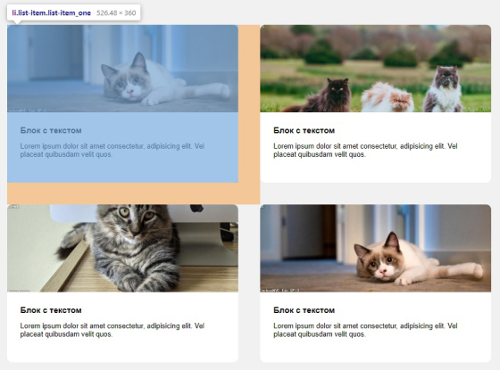
ВАЖНО:margin всегда задают от предыдущего элемента к следующему.
Свойство margin необходимо только для того, чтобы
отодвинуть своего соседа справа или снизу, поэтому используется
margin-right и
margin-bottom.
(!) Свойства margin-left и
margin-top
используются крайне редко.
Для padding
верно обратное. Исключением является его применения в декоративных целях, например, для увеличения области ссылки.
Отступ внутри блока сверху или слева реализуется через
padding-top и
padding-left родителя.
Отступы, как правило, делают в направлении от предыдущего элемента к следующему.
Так элемент не будет толкать сам себя.
Изначально элемент статичен, а его положение может меняться только под воздействием свойств
других блоков или свойств родителя.
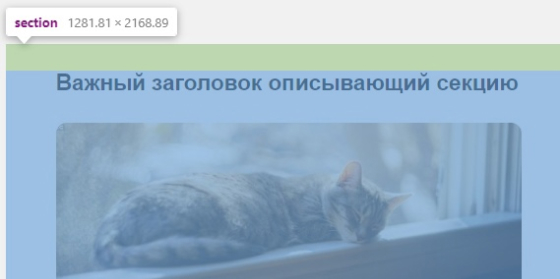
Отступ задается последнему возможному элементу в DOM-дереве
Вообще, margin
задают исключительно между соседними элементами DOM-дерева. Для примера, посмотрите на этот список:
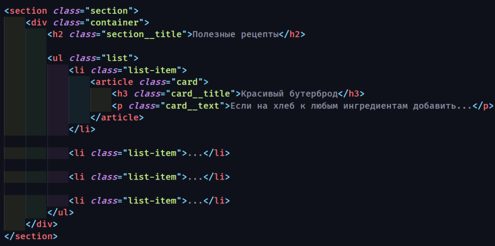
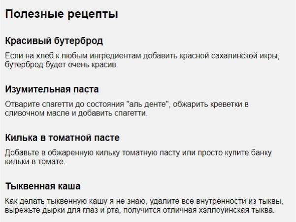
Отступ делают за счёт соседних элементов, а не дочерних:
ВАЖНО: здесь
.list-item — последний возможный элемент в котором мы задаём отступ, чтобы разделить списки.
Казалось бы, можно задать отступ параграфу <p> ,
либо обёртке <article> для достижения той же цели. Внешне останется все точно также,
но так делать не рекомендуется.
Предыдущий пример был достаточно простым, но бывает вложенность значительно больше.
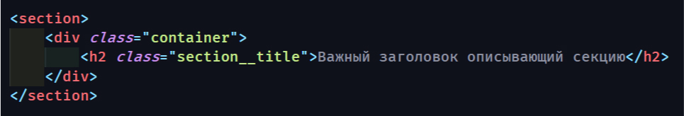
В случае с заголовком, если ему необходим отступ сверху, последним элементом будет
section. Именно для него задается padding-top, а не
с классом .container. Свойства
margin, которые стоят по умолчанию необходимо обнулить.
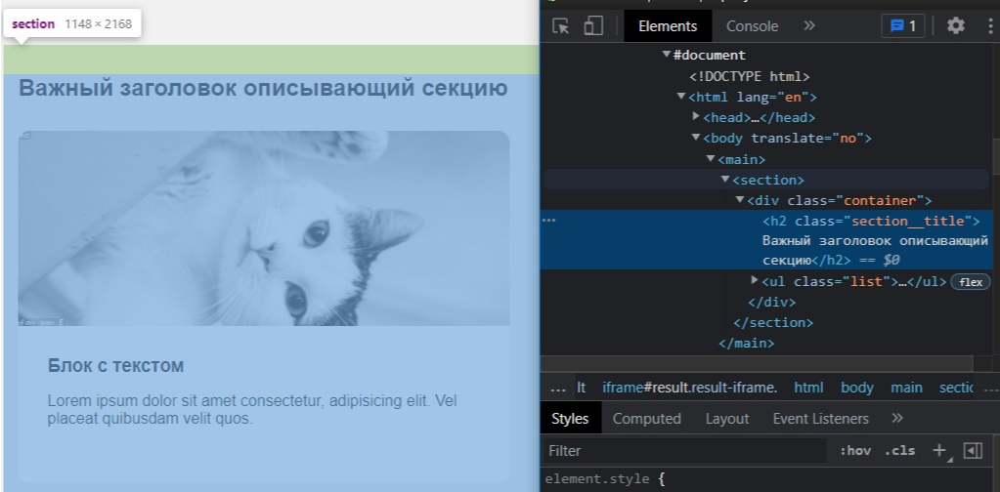
Это необходимо для более простого поиска отступов в будущем — для вас или того, кто будет верстать после вас.
Кроме того, возможны серьёзные проблемы при динамическом дублировании или выводе вёрстки с нестандартной структурой отступов.
Для последнего элемента группы отступ всегда обнуляется
Для наглядности возьмём наш предыдущий пример с рецептами
Между рецептами расстояние одинаковое. Можно заметить, что и до следующего блока расстояние такое же.
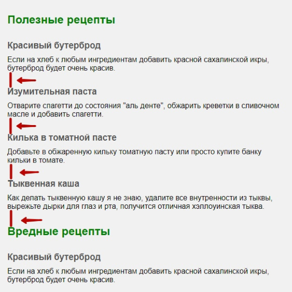
В соответствии со вторым принципом: последний margin
обнуляется, а нижний отступ задаётся через padding для
Я чаще всего задаю padding для секции с обоих сторон, если расстояние между секциями 100px задаю секциям
padding-top:50px и padding-bottom:50px.
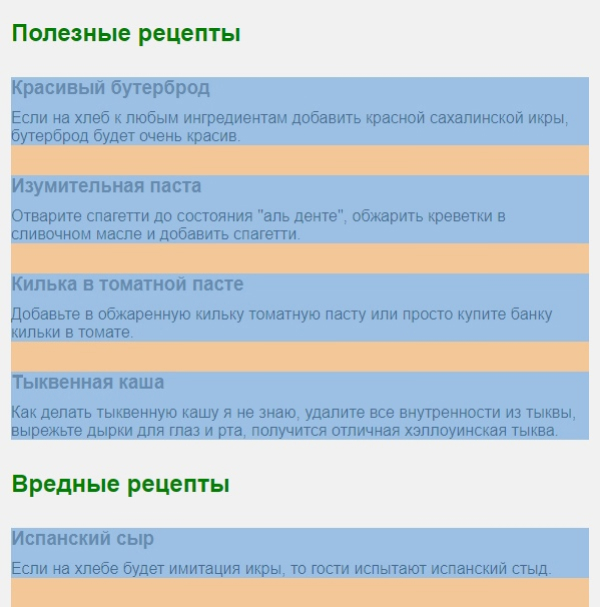
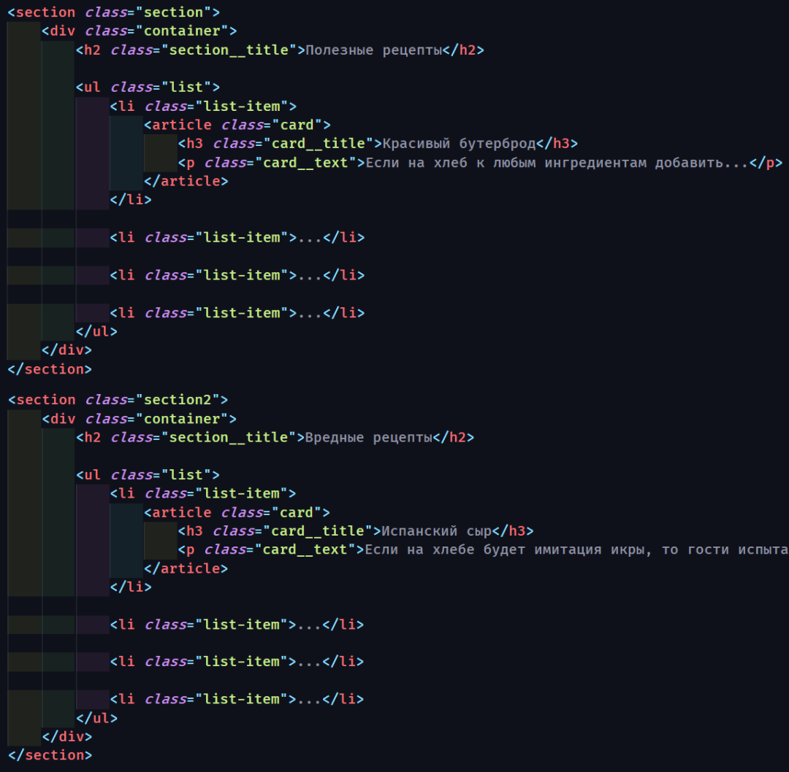
Для большего понимания рассмотрим другой пример, который часто встречается на практике:
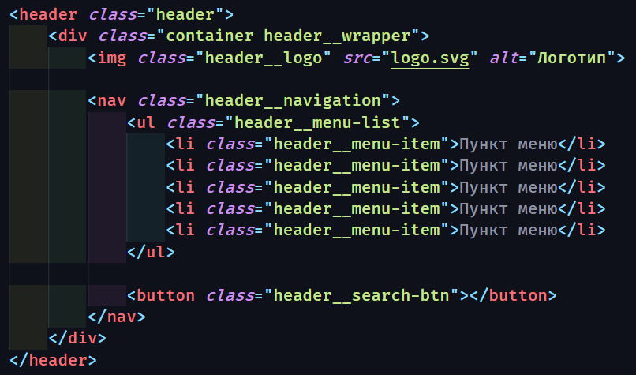
Здесь нас интересует отступ между пунктами меню и списком с кнопкой поиска. Отступы между пунктами меню задаются так:
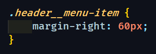
Советую использовать псевдоклассы :last-child чаще других, например так:
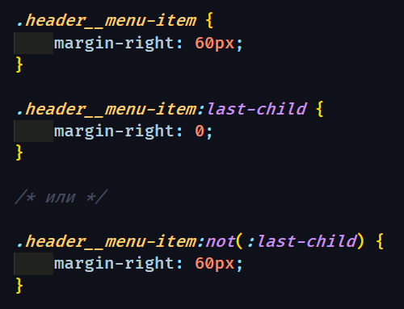
Содержание:
отступы задаём от предыдущего элемента к следующему
используем только margin-right
и margin-bottom
внешние отступы задаются только между соседями
внутренний отступ задаём самому верхнему элементу в DOM-дереве
последнему элементу группы отступ всегда обнуляем
Конечно бывают исключения. Ведь макеты бывают различной сложности.
Иногда базовые принципы приходится нарушать в угоду дизайнерского решения или простоты вёрстки.
Но для этого эти принципы необходимо хорошо знать.